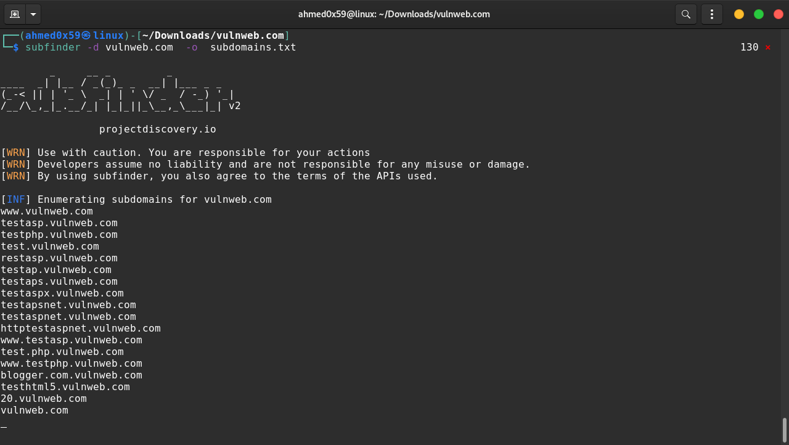
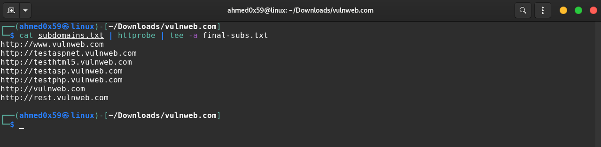
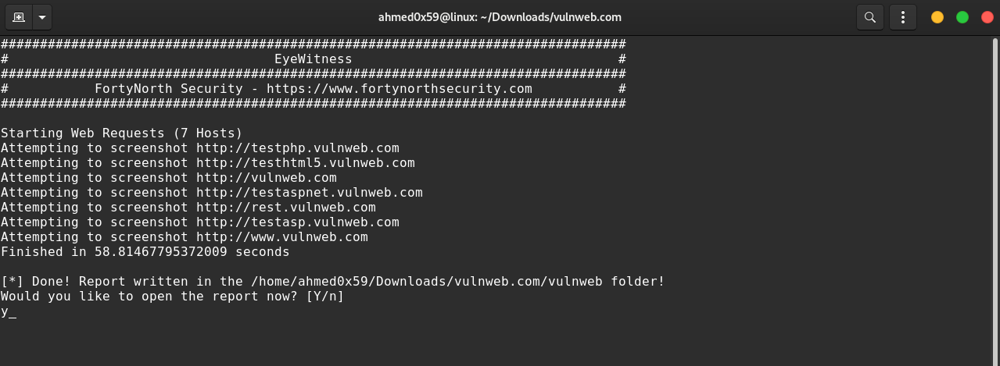
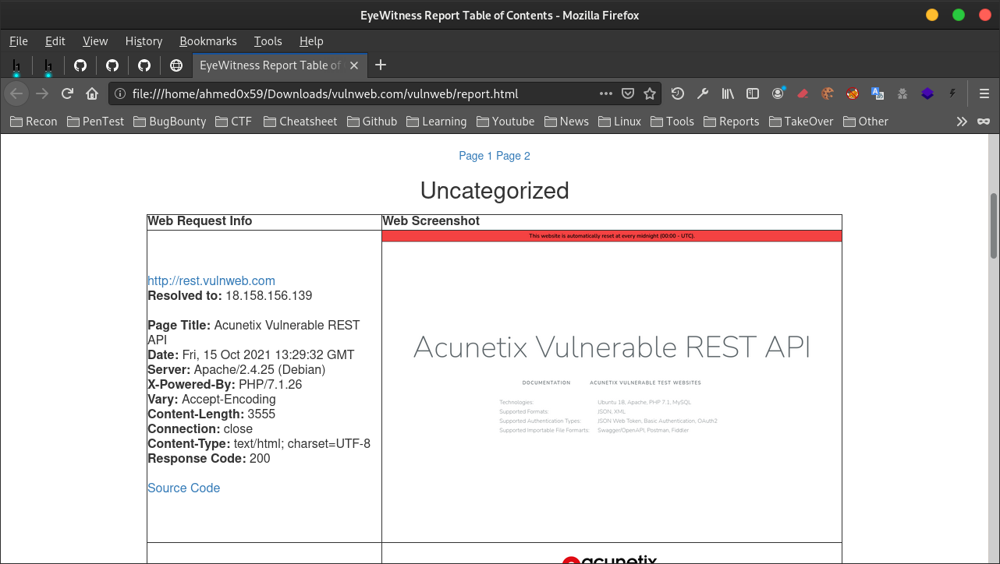
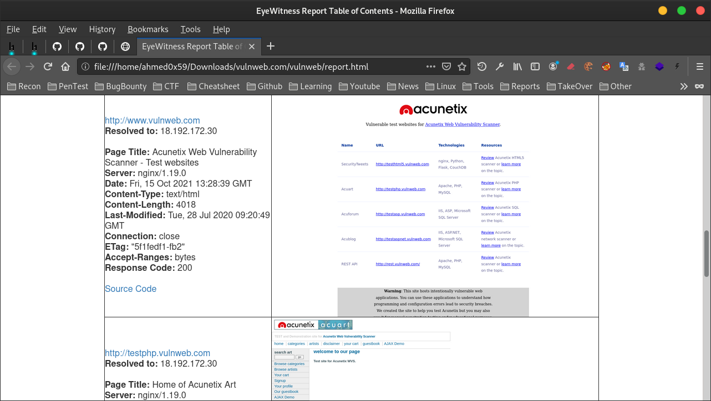

EyeWitness Tool
السلام عليكم ,
شرح اداة EyeWitness لاخد Screenshot لكل المجالات الفرعية
تقوم ادة EyeWitness باخد لقطات لكل المجالات الفرعية وتنظيم النتائج في مجلد للاطلاع على جميع Subdomains بطريقة سريعة
1. نقوم بالحصول على كل المجالات الفرعية Subdomains باستخدام اداة subfinder
2. نقوم بفلترة كل المجالات الفرعية لاستخراج المجالات النشطة والمجالات الغير موجودة واخراج النتائج في ملف , نقوم باستخدام اداة httprobe
3. استخدام اداة EyeWitness لاخد Screenshot لكل المجالات الفرعية
تنزيل الادوات :
sudo apt install subfinder sudo apt install httprobe sudo apt install eyewitness
1. الحصول على كل المجالات الفرعية Subdomains في موقع vulnweb.com وحفظ النتائج في subdomains.txt
موقع vulnweb.com هو موقع مصمم لغرض التدرب عليه لاكتشاف الثغرات :
subfinder -d vulnweb.com -o subdomains.txt

2. فلترة كل المجالات الفرعية لاستخراج المجالات النشطة وحفظ النتائج في final-subs.txt
cat subdomains.txt | httprobe | tee -a final-subs.txt

3. استخدام اداة EyeWitness لاخد Screenshot لكل المجالات الفرعية
eyewitness -f final-subs.txt --web --timeout 12 -d vulnweb --timeout Maximum number of seconds to wait while requesting a web page (Default: 7) --web HTTP Screenshot using Selenium -f Line-separated file containing URLs to capture -d Directory name for report output

عند الانتهاء نقوم بفتح Report في المتصفح لعرض النتائج بشكل منظم


سنقوم بانشاء سكربت بلغة Bash لأتمتة كل الاوامر السابقة في امر واحد :
Bash Script : script.sh ======================== #!/bin/bash subfinder -d $1 -o subdomains.txt cat subdomains.txt | httprobe | tee -a final-subs.txt eyewitness -f final-subs.txt --web --timeout 12 -d $1 ========================
نقوم باعطاء السكربت صلاحيات التنفيذ
sudo chmod +x script.sh
تنفيذ السكربت مع اسم الموقع فقط بدون https
Example : ./script.sh target.com ./script.sh vulnweb.com